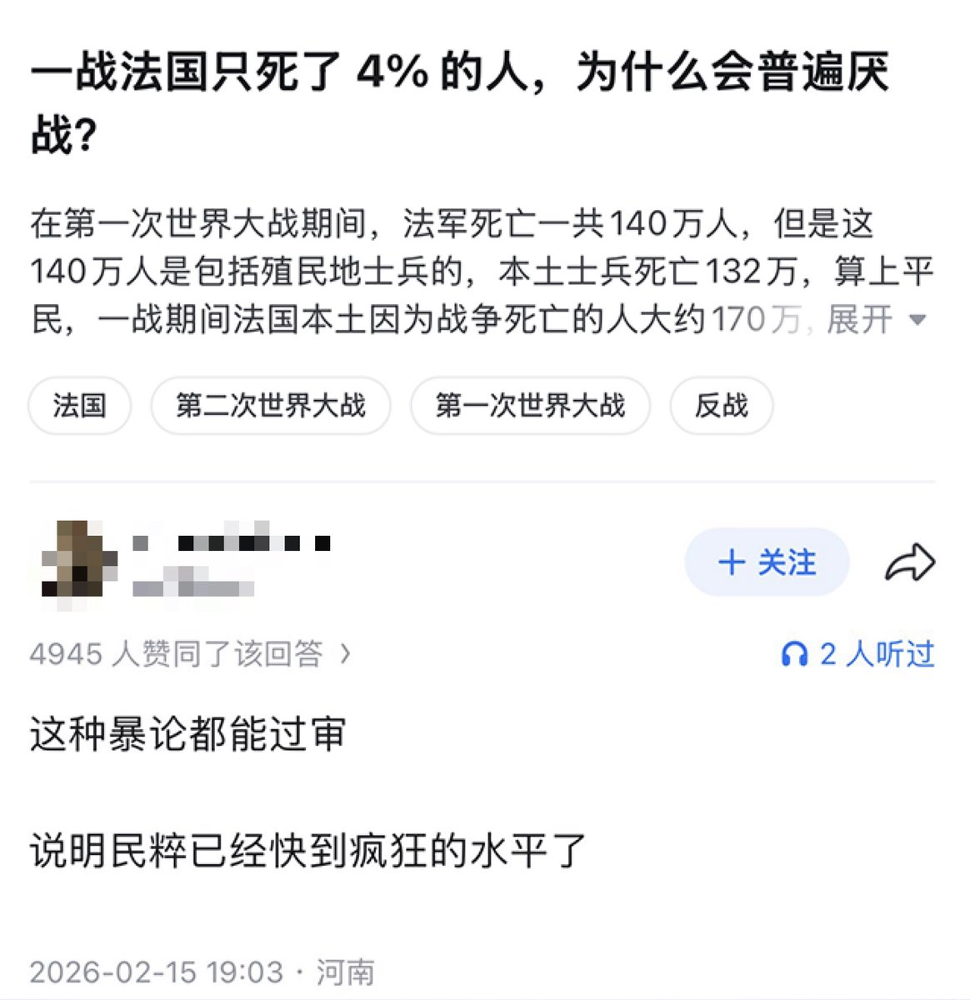

御坂 O.o 雪春📕 (掉fo版)（雪似梅花）
@0502railgun1949
你首先是一个人
然后才能接受宏大叙事的那些东西
参加战争的人都不会再想参加战争
你看着和你同生共死的战友一个个如流水般死去，你用烟草和毒品来麻醉自己
想着如果有一天死去，家人该怎么办
如果自己残疾，家里面靠谁来支撑
死去的是一个活生生的人，不是数字
中国已经丧失了对战争残酷的集体记忆

李老师不是你老师
@whyyoutouzhele
知乎上有人问：一战法国只死了4%的人，为什么会普遍厌战？
一网友回复：“这种暴论都能过审，说明民粹已经快到疯狂的水平了”
目前这条回复已被删除，但该问题在知乎上仍存在。 https://t.co/94knIg03wo